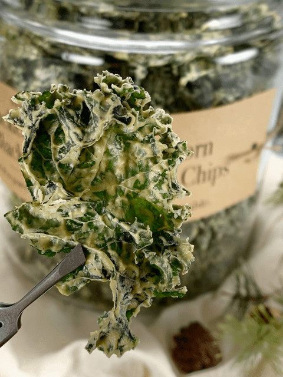

Cracked Black Pepper and Black Truffle Salt Kale Chips
 Black Truffle Sea Salt… my new spice love affair. This past summer, Bob came home with a tiny pouch of Black Truffle Sea Salt. He opened the bag and stretched out his arm, indicating for me to come to inspect his new find. I quickly approached him, leaned in, and took a deep, slow inhale.
Black Truffle Sea Salt… my new spice love affair. This past summer, Bob came home with a tiny pouch of Black Truffle Sea Salt. He opened the bag and stretched out his arm, indicating for me to come to inspect his new find. I quickly approached him, leaned in, and took a deep, slow inhale.
It was earthy, musty, intoxicating. This was my first encounter with black truffle, and now I wonder why?! I quickly found myself sprinkling on just about every savory dish that I sat down before me.
Black truffles are sometimes referred to as the “black diamonds” of the kitchen and are prized by chefs for their distinctive, luxurious aroma.
If you are looking to impress your friends and family, the Black Truffle Sea Salt gives an epicurean sophistication to your kale chips. It offers the perfect balance between salty, earthy, and rich flavors.
Truffles are expensive, and I am not asking you to go out and purchase a whole one to grate into the salt shaker. Black truffles (the more common variety) run about $95 per ounce, while white truffles top the charts at $168 per ounce!
They are round, warty, and irregular in shape and vary from the size of a walnut to that of a man’s fist. For this recipe, you will want to use a sea salt that has truffle flakes in it, which dramatically reduces that cost.
How Do Truffles Grow?
In a nutshell… Truffles are part of the fungi family. The truffle grows underground very close to tree roots. The fungi develop a close, intertwined relationship with the tree’s root system due to the consistent supply of carbohydrates, the tree benefits by technically having a larger root surface and as such more ability to absorb minerals and water.
Truffles are harvested with the aid of female pigs or truffle dogs, which can detect the strong smell of mature truffles underneath the surface of the ground. Why a female pig? Well, it becomes exciting when she sniffs a chemical that is similar to the male swine sex attractant. The use of pigs is risky, though, because of their natural tendency to eat any remotely edible thing. For this reason, dogs have been trained to dig into the ground wherever they find these odors, and they willingly exchange their truffle for a treat and a pat on the head.
The Best Kale Christmas Gift
For Christmas this year, I made a LARGE batch (actually five batches combined) of kale chips for a friend of ours who has a great love for kale chips as well as exotic flavors… so I just knew that I needed to make kale chips that were infused with black truffles. At first, I thought of truffle oil, but from my years of watching the Food Network programs on TV, I learned that most people don’t know how to balance it with other foods, and it can unpleasantly overtake a dish. I veered away from the idea of using the oil.
I quickly grabbed my baggy of Black Truffle Sea Salt and headed out to the kitchen. I asked Bob if he would be so kind as to de-stem and tear up five heads of kale for me while I made the sauce. He happily went to work, as did I. With the sauce made, we watched in awe as the sauce slowly poured from the blender carafe over all of the kale. Once I scraped every last ounce of sauce out of the jar, we dove in with our hands and started delicately massaging the sauce into each piece of kale.
One comment that I typically get about my kale chips is how much flavor they have and how sturdy they are. I also receive feedback from those who try making my kale chip recipes that at first, they felt there was way too much sauce and that it was too thick. These two descriptions are what make my kale chip recipes a success! I just ask that you trust the process. I wouldn’t steer you wrong.
Be prepared for a rich aroma to waft through the house as they “bake” in the dehydrator. But be better prepared for the strong temptation that will overtake you each time you pass the jar of completed chips. If you are like me, it’s best to hide the jar in the pantry. Hehe, Enjoy, and please leave a comment below. blessings, amie sue

Ingredients
- 2 cups cashews, soaked 2+ hours
- 3/4 cup water
- 3 Tbsp nutritional yeast
- 1 Tbsp onion powder
- 1/4 tsp fresh powdered nutmeg
- 1 tsp Black Truffle sea salt
- 1/2 tsp Himalayan pink salt
- 1/4 tsp white pepper
Topping:
- Fresh cracked black peppercorns
- Black Truffle sea salt
Preparation:
Sauce:
- After soaking the cashews, drain and discard the soak water.
- In a high-speed blender, blend the soaked cashew, water, nutritional yeast, onion powder, nutmeg, truffle salt, sea salt, and white pepper until smooth.
- Depending on the blender, this can take several minutes.
- Selecting Kale:
- Don’t use wilted / old kale; it can have a bitter undertone.
- I prefer Curly Kale because all of the folds hold onto the sauce.
- Wash and de-stem your kale.
- Start by washing the kale and blotting it dry. You can also use a salad spinner if you own one.
- Make sure you get as much excess water off of the kale as possible. If you don’t, it will make your sauce “soupy.” Set aside.
- Starting at the bottom strip away the leaf, leaving behind only the stem.
- Tear the remaining leaves into pieces that are a tad larger than bite-size since they tend to shrink.
Assembly:
- Place the torn kale in a very large bowl.
- Pour in the sauce and with your hands gently and evenly coat each piece of kale.
- This is a “hands-on” job. Stirring with a spoon doesn’t do the trick.
- I would suggest removing any jewelry from your fingers. I have temporarily lost a ring here and there.
- Shake the cracked black pepper and truffle salt over the top of the kale before sliding it into the dehydrator.
Dehydrator Method:
- Have the dehydrator trays ready by lining them with non-stick teflex or parchment paper.
- Don’t use wax paper because food tends to stick to it.
- Spread all the trays out in advance because soon, your hands will be covered in sauce, and you don’t want to get it all over.
- Place the kale on the non-stick sheets. You can do this 1 of 2 ways:
- Lay each piece out semi-flat if you want to create individual pieces. More time-consuming and chips tend to be a little bit more fragile.
- Or, drop clumps of coated kale on the sheets to create hardy clusters that are loaded with sauce and flavor, which is my preference.
- Top with fresh cracked black pepper and salt.
- Dehydrate at 115 degrees (F) for about 6-8 hrs or until dry.
- I tend to pull mine out before it gets 100% dry because I like it a little chewy.
- The dry time is just an estimate. The climate, humidity, dehydrator, and how full the machine is can all affect how long it will take to dry.
- Store in an airtight glass container and be ready to nibble non-stop till the last crumb is gone!
- If the kale chips start taking on some humidity from the house, you can place them back into the dehydrator for a few hours at 115 degrees (F).
Oven Method:
- Please use it as a guide and closely monitor the kale chips as they cook.
- Preheat the oven to 300 degrees (F), anything higher, and risk burning the chips.
- Line the baking sheet with parchment paper and place the kale chips on the baking sheet in a single layer.
- Bake for 10 minutes, rotate the pan and bake for another 15 minutes.
- The bake times will vary based on your oven, but it’s a good starting off point!
- Once you pull the tray from the oven, allow the chips to cool on the baking sheet.
- Store in an airtight glass container and be ready to nibble non-stop till the last crumb is gone!
© AmieSue.com